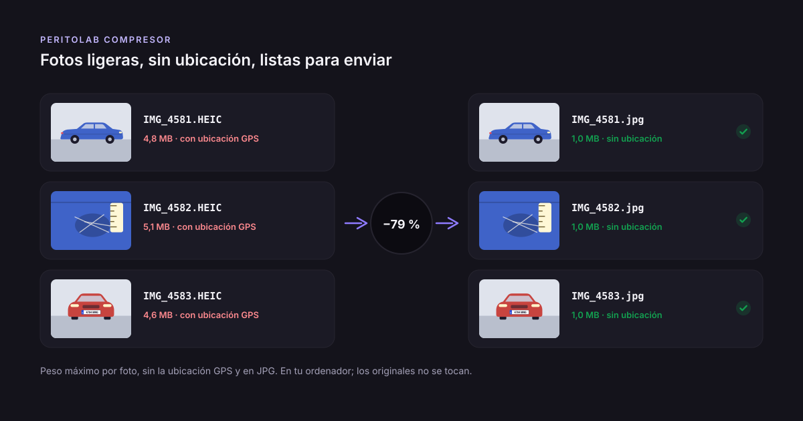
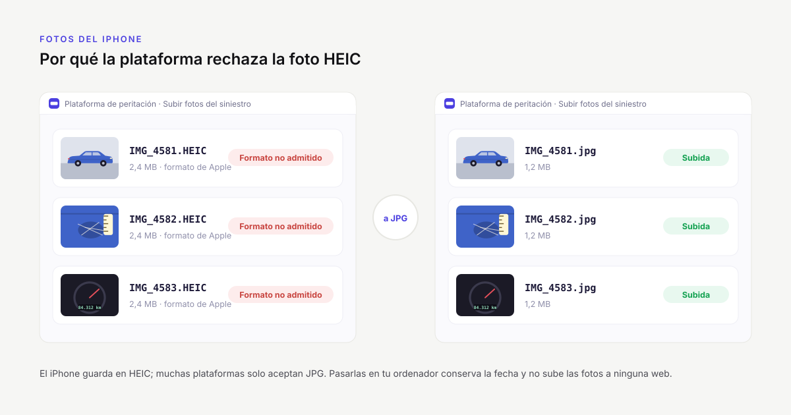

Guías para peritos
Lo que más tiempo quita con las fotos de un peritaje, explicado paso a paso.
 Caso real: cómo GPFIAL organiza miles de fotos de peritaje al añoCómo un gabinete pericial de Canarias organiza miles de fotos al año: 56.963 fotos reales de 1.866 vehículos, más del 99 % en su carpeta.
Caso real: cómo GPFIAL organiza miles de fotos de peritaje al añoCómo un gabinete pericial de Canarias organiza miles de fotos al año: 56.963 fotos reales de 1.866 vehículos, más del 99 % en su carpeta. Programa para las fotos del peritaje: qué mirar antes de elegirloCuánto tiempo te cuesta separar las fotos a mano y qué comprobar en un programa para el peritaje: fotos en local, revisión de dudas, originales y PDF.
Programa para las fotos del peritaje: qué mirar antes de elegirloCuánto tiempo te cuesta separar las fotos a mano y qué comprobar en un programa para el peritaje: fotos en local, revisión de dudas, originales y PDF. Qué fotos hacer en un peritaje de automóvil: la lista completaLista de las fotos de un peritaje de automóvil: identificación, generales y de detalle, cómo fotografiar los daños para que se vean y qué conservar.
Qué fotos hacer en un peritaje de automóvil: la lista completaLista de las fotos de un peritaje de automóvil: identificación, generales y de detalle, cómo fotografiar los daños para que se vean y qué conservar. Cómo organizar las fotos de un peritaje por vehículoCómo separar las fotos de un peritaje en una carpeta por vehículo: método manual, consejos para no equivocarse y cómo hacerlo automático con la matrícula.
Cómo organizar las fotos de un peritaje por vehículoCómo separar las fotos de un peritaje en una carpeta por vehículo: método manual, consejos para no equivocarse y cómo hacerlo automático con la matrícula.
Cómo reducir el tamaño de las fotos para enviarlas a la aseguradoraCómo reducir el tamaño de las fotos de un siniestro para la aseguradora o la plataforma de peritación sin perder detalle, y por qué quitar el GPS.
Fotos HEIC del iPhone en peritaje: qué son y cómo pasarlas a JPGQué es el formato HEIC del iPhone, por qué da problemas en peritaje y cómo pasar las fotos a JPG sin subirlas a ninguna web.